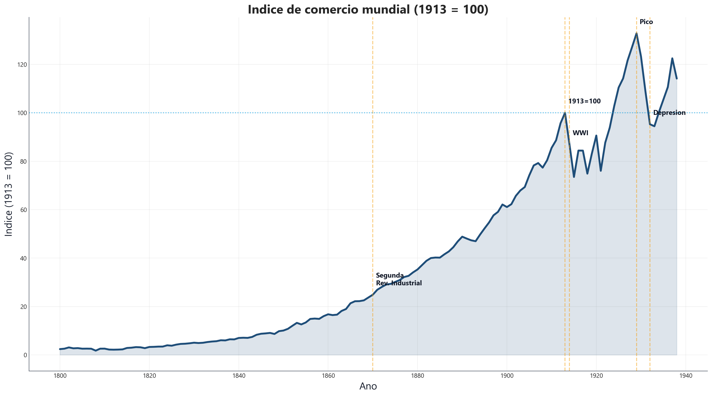

Economia Internacional
Clase 1 — El comercio mundial: auge, colapso y preguntas abiertas
Participación regional (1800-1938)

Fuente: FTWTHD
Cómo leerlo:
Cada línea = % del comercio mundial de esa región.
Datos clave:
- Europa: 60-70% (domina)
- Américas: 10-20%
- Asia: 10-15%
Conclusión:
La “globalización” del siglo XIX era básicamente comercio europeo con el mundo.
Indicador 4: Cobertura estadística

Fuente: Estimación FTWTHD
¿Qué muestra?
Países con datos por año.
Datos:
- 1800: ~25 países
- 1913: ~120 países
Advertencia:
El índice puede crecer porque hay más comercio O porque hay más países en la base. Por eso usamos índices, no valores absolutos.
Etapa 1: Economía-mundo ibérica (1500-1650)

Fuente: Mapas históricos
Rutas ibéricas siglo XVI:
- Portugal: ruta del Cabo → Asia
- España: Atlántico → América
Modelo de comercio:
Monopolios estatales (Casa de Contratación). El Estado absorbe riesgos y captura rentas.
El Galeón de Manila: primera cadena global

Fuente: Mapa histórico
El circuito:
- Manila: sedas de China
- Acapulco: descarga, carga plata
- Sevilla: plata a Europa
Primera cadena global: Asia manufactura, América plata, Europa financia.
Flotas y seguridad marítima

Fuente: Herman Moll, c.1720
Sistema de flotas:
- Barcos viajan en convoy (piratas)
- Dos flotas anuales
- Reunión en La Habana
Lección: El comercio requiere seguridad. Sin ella, no hay comercio de larga distancia.
Etapa 2: Hegemonía británica (1815-1913)

Fuente: Navy League, 1922
Red imperial británica:
- Rutas marítimas globales
- Bases navales estratégicas
- Estaciones de carbón
Diferencia con Iberia: UK usa libre comercio + marina + libra, no monopolios.
Infraestructura: cables submarinos

Fuente: Eastern Telegraph, 1901
Antes: Info viajaba a velocidad del barco.
Después: Instantáneo.
Consecuencias:
- Precios se arbitran rápido
- Seguros y pagos a distancia
- Londres = centro financiero
Lección: Integración = mover bienes + información.